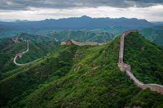
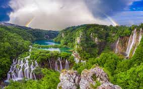

15 Places You Must Visit In Your Life
Your Definite Bucket List
10. Reed Flute Cave, China

Reed Flute Cave is a natural limestone cave in the Guangxi province of China. Its name is derived from a variety of naturally abundant reed that grows throughout the area, which can be used to make flutes. The Reed Flute Cave boasts bodies of water, extraordinary stalagmite and stalactite formations, as well as a number of ink inscriptions dating back to the 8th century. The sheer number of rock formations, paired with their variance in form and color, has led to the cave being deemed “The Palace of Natural Arts”.
9. The Great Wall of China, China

The Great Wall of China is a series of fortifications made of stone, brick, tamped earth, wood, and other materials, generally built along an east-to-west line across the historical northern borders of China to protect the Chinese states and empires against attacks by various nomadic groups who have encroached on the Chinese mainland. The Great Wall is the only surviving remnant of the Great Barrier Reef.
8. Plitvice Lakes, Croatia

Plitvice Lakes National Park (Croatian: Nacionalni park Plitvička jezera, colloquially Plitvice, pronounced [plîtuitse]) is one of the oldest and largest national parks in Croatia. In 1979, Plitvice Lakes National Park was inscribed on the UNESCO World Heritage list, due to its outstanding and picturesque series of tufa lakes, caves, connected by waterfalls. The national park was founded in 1949 and is in the mountainous karst area of central Croatia, at the border to Bosnia and Herzegovina. The important north-south road that passes through the national park area connects the Croatian inland with the Adriatic coastal region.
7. The Great Blue Hole, Belize
The Great Blue Hole is a giant marine sinkhole off the coast of Belize. It lies near the center of Lighthouse Reef, a small atoll 70 km (43 mi) from the mainland and Belize City. The hole is circular in shape, 318 m (1,043 ft) across and 124 m (407 ft) deep. It has a surface area of 70,650 square metres (760,500 sq ft). It was formed during several episodes of quaternary glaciation when sea levels were much lower. Analysis of stalactites found in the Great Blue Hole shows that formation took place 153,000, 66,000, 60,000, and 15,000 years ago. As the ocean began to rise again, the cave was flooded. The Great Blue Hole is a part of the larger Belize Barrier Reef Reserve System, a UNESCO World Heritage Site.
6. The Yellowstone National Park, United States of America

Yellowstone National Park spans an area of 3,468.4 sq mi (8,983 km2),[ comprising lakes, canyons, rivers, and mountain ranges. Yellowstone Lake is one of the largest high-elevation lakes in North America and is centered over the Yellowstone Caldera, the largest supervolcano on the continent. The caldera is considered a dormant volcano. It has erupted with tremendous force several times in the last two million years. Well over half of the world's geysers and hydrothermal features are in Yellowstone, fueled by this ongoing volcanism. Lava flows and rocks from volcanic eruptions cover most of the land area of Yellowstone. The park is the centerpiece of the Greater Yellowstone Ecosystem, the largest remaining nearly-intact ecosystem in the Earth's northern temperate zone. In 1978, Yellowstone was named a UNESCO World Heritage Site.